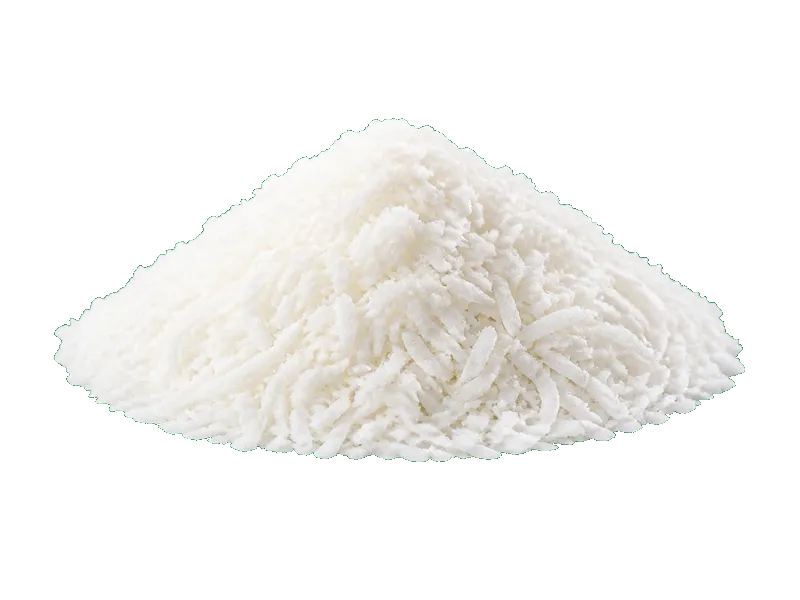

Orzechy
Kokos suszony (wiórki)
Kokos suszony (wiórki) to produkt z kategorii Orzechy. Na 100 g znajdziesz 7 g białka (proteinów), 660 kcal kalorii, 24 g węglowodanów oraz 65 g tłuszczu — idealne dane przy zdrowym odżywianiu, odchudzaniu lub budowie masy mięśniowej. Współczynnik ok. 94.3 kcal na 1 g białka pomaga porównać gęstość odżywczą. Do ciast i curry.
Kalorie660 kcalna 100 g
Białko / proteiny7 g
Węglowodany24 g
Tłuszcz65 g
Cena (szac.)~6,00 złza 100 g
Ceny zaktualizowano: maj 2026 (szacunek — ceny w popularnych supermarketach)
Porcja: garść (30g) — 2.1 g białka, 7.2 g węgli, 19.5 g tłuszczu (kalorie podane wyłącznie na 100 g). Cena porcji (szac.): ~1,80 zł.
Szczegółowe składniki odżywcze na 100 g
| Wartość energetyczna (kalorie) | 660 kcal |
|---|---|
| Białko (proteiny) | 7 g |
| Węglowodany | 24 g |
| Tłuszcz | 65 g |
| Tłuszcze nasycone | 57 g |
| Tłuszcze nienasycone | 8 g |
| Witaminy i minerały | Magnez, Witamina E, Cynk |
| Współczynnik kcal / 1 g białka | 94.3 |
| Cena produktu (szac. za 100 g) | ~6,00 zł |
| Cena za 100 g białka (szac.) | ~85,71 zł |